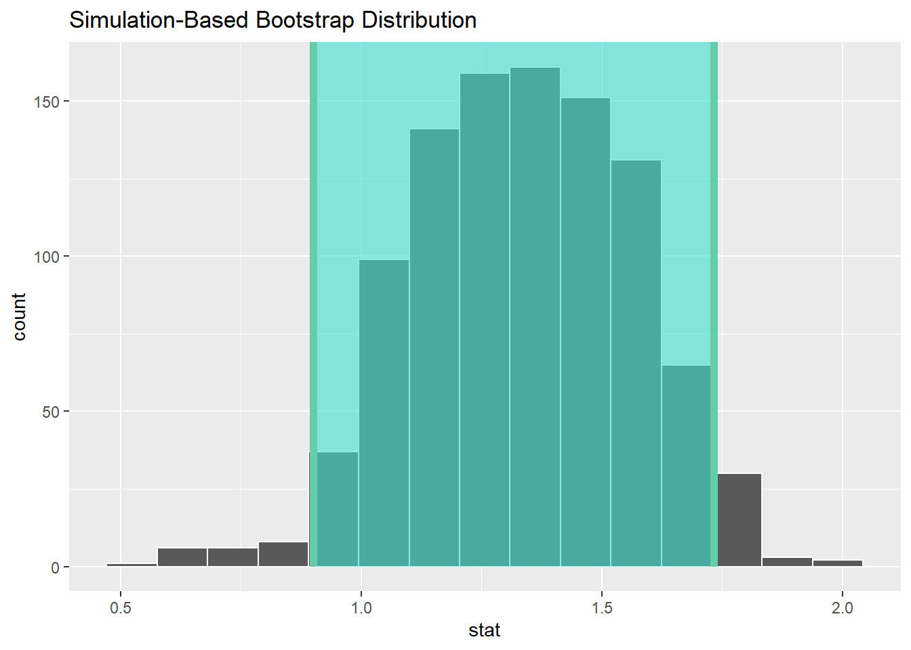
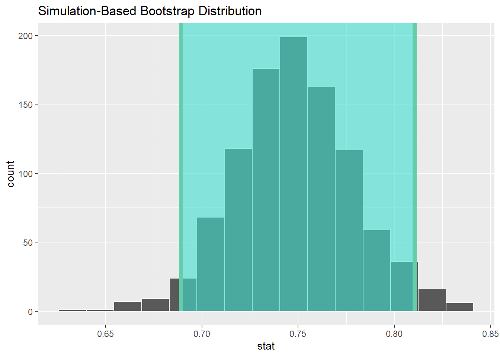
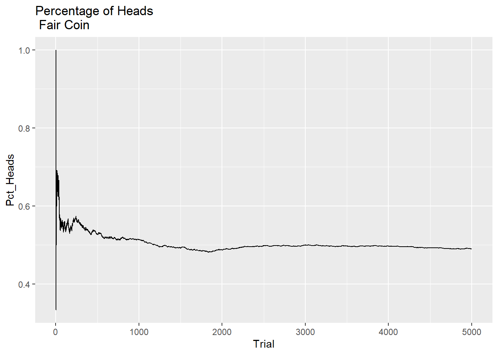
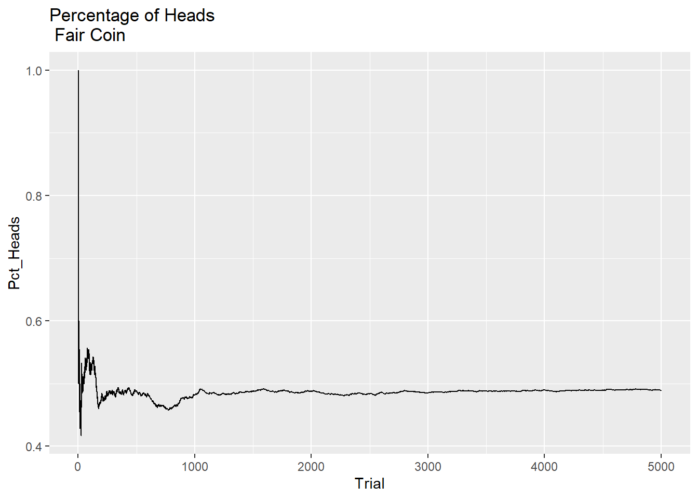
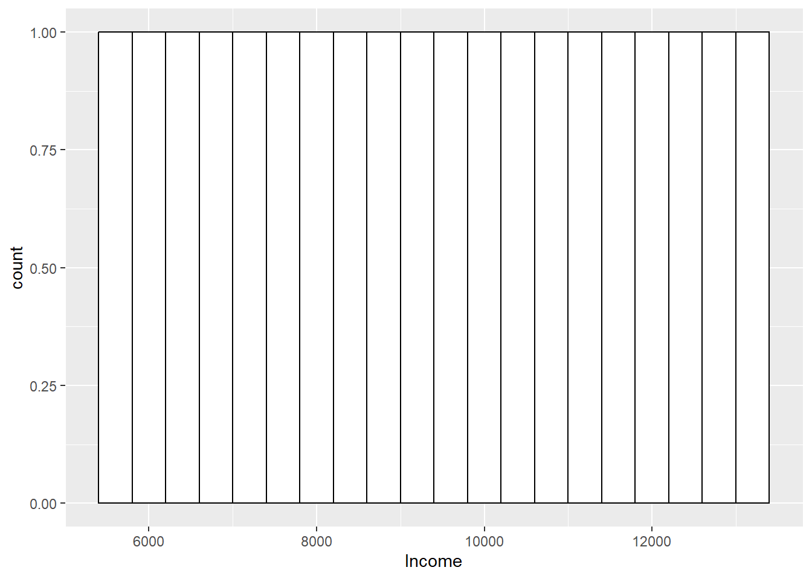

Chapter 5 Introduction to Bootstrapping
First, we will demonstrate the basic principle. Let’s use our last sample of 50 from the above example, first we will remind ourselves of its properties and distribution:
## [1] 17.84924## [1] 16.68265
Ok lovely. Now, what we do is draw another random sample of 50 from this 50, but each time we draw a data point, we replace it back, so we are always drawing our sample from the full 50. This is called sampling with replacement.
In this way, the new sample can only contain values which were in the original sample, but will contain different numbers of those values, so the distribution will be different, and the statistics may also be different. Let’s do this, and take the mean and median of the sample:
## # A tibble: 50 × 4
## ...1 biking smoking heart.disease
## <dbl> <dbl> <dbl> <dbl>
## 1 426 15.4 23.4 14.1
## 2 116 25.8 28.5 14.4
## 3 403 38.2 4.25 7.26
## 4 184 72.4 7.52 1.87
## 5 381 8.52 29.9 17.9
## 6 54 9.82 23.8 17.8
## 7 390 63.6 12.5 3.45
## 8 381 8.52 29.9 17.9
## 9 426 15.4 23.4 14.1
## 10 155 55.5 5.27 4.92
## # ℹ 40 more rows## [1] 19.0241## [1] 17.26657
Marvellous! Now, let’s do this twice more…
## # A tibble: 50 × 4
## ...1 biking smoking heart.disease
## <dbl> <dbl> <dbl> <dbl>
## 1 74 49.4 23.2 9.47
## 2 132 3.95 6.36 14.6
## 3 390 63.6 12.5 3.45
## 4 136 28.4 20.2 13.0
## 5 263 67.1 8.48 3.12
## 6 213 15.5 18.8 14.9
## 7 440 30.5 18.1 11.7
## 8 67 23.3 14.3 13.3
## 9 237 39.2 17.6 10.7
## 10 239 61.4 22.9 6.84
## # ℹ 40 more rows## [1] 18.1421## [1] 16.15746
## # A tibble: 50 × 4
## ...1 biking smoking heart.disease
## <dbl> <dbl> <dbl> <dbl>
## 1 322 61.3 15.4 5.48
## 2 54 9.82 23.8 17.8
## 3 392 70.6 11.2 2.65
## 4 43 9.67 3.50 12.9
## 5 43 9.67 3.50 12.9
## 6 179 5.20 4.36 15.6
## 7 318 43.9 26.1 11.4
## 8 179 5.20 4.36 15.6
## 9 239 61.4 22.9 6.84
## 10 390 63.6 12.5 3.45
## # ℹ 40 more rows## [1] 16.48375## [1] 15.66209
We can build a table in the slides of these mean and median values
So, this is the basic principle of bootstrapping. We sample with replacement from our original sample, many many times. We did 3 here manually, but we generally use a routine to do this thousands of times.
back to slide deck
5.1 Bootstrapping our Previous Samples
So, what we can do now, is run 1000 bootstrap replications of each of our varying-sized subsamples of the smoking data, to see what might happen:
First, the 10:
##
## ORDINARY NONPARAMETRIC BOOTSTRAP
##
##
## Call:
## boot(data = sub.10, statistic = f1, R = 1000)
##
##
## Bootstrap Statistics :
## original bias std. error
## t1* 13.98118 0.06259356 2.620379
## BOOTSTRAP CONFIDENCE INTERVAL CALCULATIONS
## Based on 1000 bootstrap replicates
##
## CALL :
## boot.ci(boot.out = results, type = "norm")
##
## Intervals :
## Level Normal
## 95% ( 8.78, 19.05 )
## Calculations and Intervals on Original ScaleLet’s do it for the other two subsamples of n=50, and n=200
##
## ORDINARY NONPARAMETRIC BOOTSTRAP
##
##
## Call:
## boot(data = sub.50, statistic = f1, R = 1000)
##
##
## Bootstrap Statistics :
## original bias std. error
## t1* 16.68265 -0.004809458 1.224156
## BOOTSTRAP CONFIDENCE INTERVAL CALCULATIONS
## Based on 1000 bootstrap replicates
##
## CALL :
## boot.ci(boot.out = results, type = "norm")
##
## Intervals :
## Level Normal
## 95% (14.29, 19.09 )
## Calculations and Intervals on Original Scale##
## ORDINARY NONPARAMETRIC BOOTSTRAP
##
##
## Call:
## boot(data = sub.200, statistic = f1, R = 1000)
##
##
## Bootstrap Statistics :
## original bias std. error
## t1* 14.83148 -0.01432268 0.5879037
## BOOTSTRAP CONFIDENCE INTERVAL CALCULATIONS
## Based on 1000 bootstrap replicates
##
## CALL :
## boot.ci(boot.out = results, type = "norm")
##
## Intervals :
## Level Normal
## 95% (13.69, 16.00 )
## Calculations and Intervals on Original ScaleAnd, finally, let’s bootstrap our original full sample of 498:
##
## ORDINARY NONPARAMETRIC BOOTSTRAP
##
##
## Call:
## boot(data = Heart, statistic = f1, R = 1000)
##
##
## Bootstrap Statistics :
## original bias std. error
## t1* 15.43503 0.001437866 0.359051## BOOTSTRAP CONFIDENCE INTERVAL CALCULATIONS
## Based on 1000 bootstrap replicates
##
## CALL :
## boot.ci(boot.out = results, type = "norm")
##
## Intervals :
## Level Normal
## 95% (14.73, 16.14 )
## Calculations and Intervals on Original ScaleThis is a very nice set of results, which can tell us many interesting things…
5.2 Bootstrapping Other Stuff…
We have so far only bootstrapped the mean. However, the basic principle can be applied to virtually any statistical estimate. So, we can revisit some of our prior models, and use the bootstrap to quantify the uncertainty in the estimates we previously accepted without really questioning them. And, we can introduce a new analysis tool to explore the difference between groups, and use the bootstrap with that too.
5.2.1 Correlations
First, let’s revisit our recent correlation analysis of Happiness and GDP per capita.
## # A tibble: 6 × 4
## Country Happiness GDPpc Pop
## <chr> <dbl> <dbl> <dbl>
## 1 Afghanistan 2.4 1971 38972236
## 2 Albania 5.2 13192 2866850
## 3 Algeria 5.12 10735 43451668
## 4 American Samoa NA NA 46216
## 5 Andorra NA NA 77723
## 6 Angola NA 6110 33428490| Name | Happy |
| Number of rows | 249 |
| Number of columns | 4 |
| _______________________ | |
| Column type frequency: | |
| character | 1 |
| numeric | 3 |
| ________________________ | |
| Group variables | None |
Variable type: character
| skim_variable | n_missing | complete_rate | min | max | empty | n_unique | whitespace |
|---|---|---|---|---|---|---|---|
| Country | 0 | 1 | 4 | 32 | 0 | 249 | 0 |
Variable type: numeric
| skim_variable | n_missing | complete_rate | mean | sd | p0 | p25 | p50 | p75 | p100 | hist |
|---|---|---|---|---|---|---|---|---|---|---|
| Happiness | 96 | 0.61 | 5.49 | 1.12 | 2.4 | 4.67 | 5.53 | 6.26 | 7.820000e+00 | ▁▅▇▇▃ |
| GDPpc | 52 | 0.79 | 20463.88 | 20717.34 | 731.0 | 4917.00 | 12655.00 | 30100.00 | 1.125570e+05 | ▇▂▁▁▁ |
| Pop | 7 | 0.97 | 59178643.60 | 331869505.09 | 809.0 | 415292.50 | 5596196.00 | 24205600.00 | 4.663087e+09 | ▇▁▁▁▁ |
If we run the same analysis as last time, we’ll get the same results: Correlation R = 0.75
Now, let’s take uncertainty into account, by bootstrapping that correlation and creating some confidence intervals, using a cool package called Infer, which makes this almost frighteningly easy:

## # A tibble: 1 × 2
## lower_ci upper_ci
## <dbl> <dbl>
## 1 0.689 0.811## Response: Happiness (numeric)
## Explanatory: GDPpc (numeric)
## # A tibble: 1 × 1
## stat
## <dbl>
## 1 0.745So, you can see the correlation is 0.75 with a 95% confidence interval of 0.69 - 0.81
Now, let’s extend this to the multiple regression case we have previously used, examining the relationships between smoking, biking, and heart disease.
Lets load up the data if needed
## # A tibble: 6 × 4
## ...1 biking smoking heart.disease
## <dbl> <dbl> <dbl> <dbl>
## 1 1 30.8 10.9 11.8
## 2 2 65.1 2.22 2.85
## 3 3 1.96 17.6 17.2
## 4 4 44.8 2.80 6.82
## 5 5 69.4 16.0 4.06
## 6 6 54.4 29.3 9.55| Name | Heart |
| Number of rows | 498 |
| Number of columns | 4 |
| _______________________ | |
| Column type frequency: | |
| numeric | 4 |
| ________________________ | |
| Group variables | None |
Variable type: numeric
| skim_variable | n_missing | complete_rate | mean | sd | p0 | p25 | p50 | p75 | p100 | hist |
|---|---|---|---|---|---|---|---|---|---|---|
| …1 | 0 | 1 | 249.50 | 143.90 | 1.00 | 125.25 | 249.50 | 373.75 | 498.00 | ▇▇▇▇▇ |
| biking | 0 | 1 | 37.79 | 21.48 | 1.12 | 20.20 | 35.82 | 57.85 | 74.91 | ▇▇▇▆▇ |
| smoking | 0 | 1 | 15.44 | 8.29 | 0.53 | 8.28 | 15.81 | 22.57 | 29.95 | ▆▆▇▆▆ |
| heart.disease | 0 | 1 | 10.17 | 4.57 | 0.55 | 6.51 | 10.39 | 13.72 | 20.45 | ▃▇▇▇▂ |
Here, we need to calculate multiple intervals as we have multiple estimates, so it’s a bit more complicated, but still fairly intuitive using Infer:

## # A tibble: 3 × 2
## term estimate
## <chr> <dbl>
## 1 intercept 15.0
## 2 smoking 0.178
## 3 biking -0.200## # A tibble: 3 × 3
## term lower_ci upper_ci
## <chr> <dbl> <dbl>
## 1 biking -0.203 -0.197
## 2 intercept 14.8 15.1
## 3 smoking 0.171 0.1865.3 T-Tests for Means
We can also use bootstrapping as an entry point to a new analysis situation, where we are comparing two groups. This could be for example in a classic experimental context; treatment and control.
So, let’s load up our Ed Sheeran study data:
## # A tibble: 6 × 3
## ID GROUP ANGER
## <dbl> <dbl> <dbl>
## 1 1 1 4
## 2 2 2 5
## 3 3 1 2
## 4 4 2 3
## 5 5 2 4
## 6 6 1 2| Name | ED_IND |
| Number of rows | 30 |
| Number of columns | 3 |
| _______________________ | |
| Column type frequency: | |
| numeric | 3 |
| ________________________ | |
| Group variables | None |
Variable type: numeric
| skim_variable | n_missing | complete_rate | mean | sd | p0 | p25 | p50 | p75 | p100 | hist |
|---|---|---|---|---|---|---|---|---|---|---|
| ID | 0 | 1 | 15.50 | 8.80 | 1 | 8.25 | 15.5 | 22.75 | 30 | ▇▇▇▇▇ |
| GROUP | 0 | 1 | 1.50 | 0.51 | 1 | 1.00 | 1.5 | 2.00 | 2 | ▇▁▁▁▇ |
| ANGER | 0 | 1 | 3.33 | 1.21 | 1 | 2.00 | 3.0 | 4.00 | 5 | ▁▇▇▆▇ |
We need to tell R that GROUP is a factor variable not a numeric one:
Check it worked:
| Name | ED_IND |
| Number of rows | 30 |
| Number of columns | 3 |
| _______________________ | |
| Column type frequency: | |
| factor | 1 |
| numeric | 2 |
| ________________________ | |
| Group variables | None |
Variable type: factor
| skim_variable | n_missing | complete_rate | ordered | n_unique | top_counts |
|---|---|---|---|---|---|
| GROUP | 0 | 1 | FALSE | 2 | 1: 15, 2: 15 |
Variable type: numeric
| skim_variable | n_missing | complete_rate | mean | sd | p0 | p25 | p50 | p75 | p100 | hist |
|---|---|---|---|---|---|---|---|---|---|---|
| ID | 0 | 1 | 15.50 | 8.80 | 1 | 8.25 | 15.5 | 22.75 | 30 | ▇▇▇▇▇ |
| ANGER | 0 | 1 | 3.33 | 1.21 | 1 | 2.00 | 3.0 | 4.00 | 5 | ▁▇▇▆▇ |
Let’s run an independent samples T-Test with bootstrapped confidence interval using Infer.
We use an independent samples test, as the theory is these two groups are sampled from independent populations (those who listened to Ed Sheeran, and those who did not) and what we are doing is trying to work out whether there is any difference in anger between them…
## # A tibble: 2 × 2
## GROUP name
## <fct> <dbl>
## 1 1 2.8
## 2 2 3.87## Response: ANGER (numeric)
## Explanatory: GROUP (factor)
## # A tibble: 1 × 1
## stat
## <dbl>
## 1 -2.65## # A tibble: 1 × 2
## lower_ci upper_ci
## <dbl> <dbl>
## 1 -5.49 -0.575Remember: Group 1 is the control, and Group 2 listened to Ed Sheeran
Cool so it seems that Group 2 displayed more anger. The Confidence interval for the t-statistic does not contain 0, so it supports the idea that there is a difference here. It is quite wide though - because of our small sample size.
OK, so let’s use a different design, using a paired samples t-test.
5.3.1 Back to the slides…
The same basic process is needed, but with some modifications because of the type of comparison we are doing.
First, we read the data in as normal, and make sure it is treated as a data frame.
## ID ANG_T1 ANG_T2
## 1 1 1 4
## 2 2 2 5
## 3 3 3 2
## 4 4 4 3
## 5 5 2 4
## 6 6 1 2Now, for this bootstrap purpose we actually need to to create a new column which is the difference between the two measurements (here, T1 and T2).
Then, we bootstrap a one-sample t-test with this new column
Let us do this:
Create new difference column:
## ID ANG_T1 ANG_T2 DIF
## 1 1 1 4 3
## 2 2 2 5 3
## 3 3 3 2 -1
## 4 4 4 3 -1
## 5 5 2 4 2
## 6 6 1 2 1Method 1: we use Infer to bootstrap a CI for the mean of the difference variable, to see whether it includes zero:

## Response: DIF (numeric)
## # A tibble: 1 × 1
## stat
## <dbl>
## 1 1.33## # A tibble: 1 × 2
## lower_ci upper_ci
## <dbl> <dbl>
## 1 0.9 1.73## [1] 2## [1] 3.333333Method 2: We use a variant of this code to run a 1-sample t-test on the difference variable, testing whether it is different from zero. To do this we need to add some code specifying a comparison with zero:

## # A tibble: 1 × 1
## p_value
## <dbl>
## 1 0## Response: DIF (numeric)
## # A tibble: 1 × 1
## stat
## <dbl>
## 1 1.33## [1] 2## [1] 3.333333Marvelous. We can see that, with both ways of looking at this test, the results suggest that after listening to Ed Sheeran, our sample on average reported more anger
1: Because the 95% confidence interval does not include 0, I am confident in saying that there is some effect going on here.
2: Because the bootstrapped probability (as expressed by the p-value) of observing the mean difference in anger between T1 and T2 of 1.33 is very low (0 in our results, but the true value will not be exactly zero), I am confident in saying there is an effect here.
Not surprised…